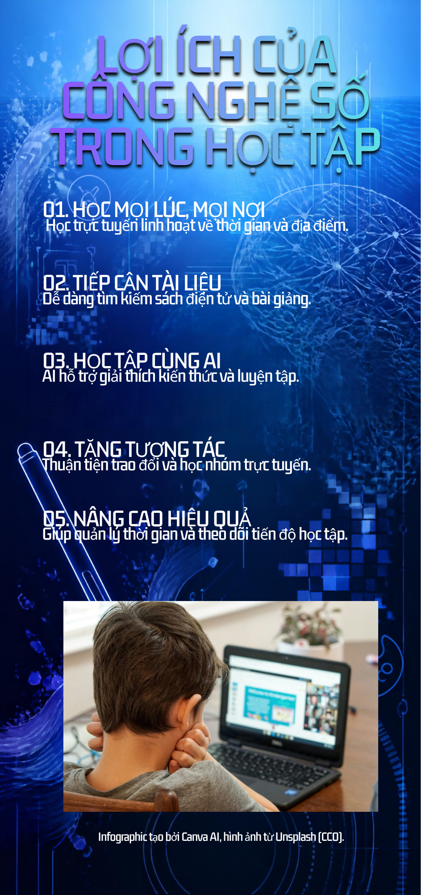

Công nghệ số · Nhiệm vụ 3.1
Lợi ích của công nghệ số
Cùng xem infographic và video giới thiệu những lợi ích thiết thực mà công nghệ số mang lại trong học tập, công việc và cuộc sống.
Infographic: Lợi ích công nghệ số
Infographic đã thực hiện ở Nhiệm vụ 2

Xem video
Công nghệ số trong cuộc sống
Video đã thực hiện ở Nhiệm vụ 2, trình bày những ứng dụng của công nghệ số.
Định dạng MP4 · Có điều khiển phát